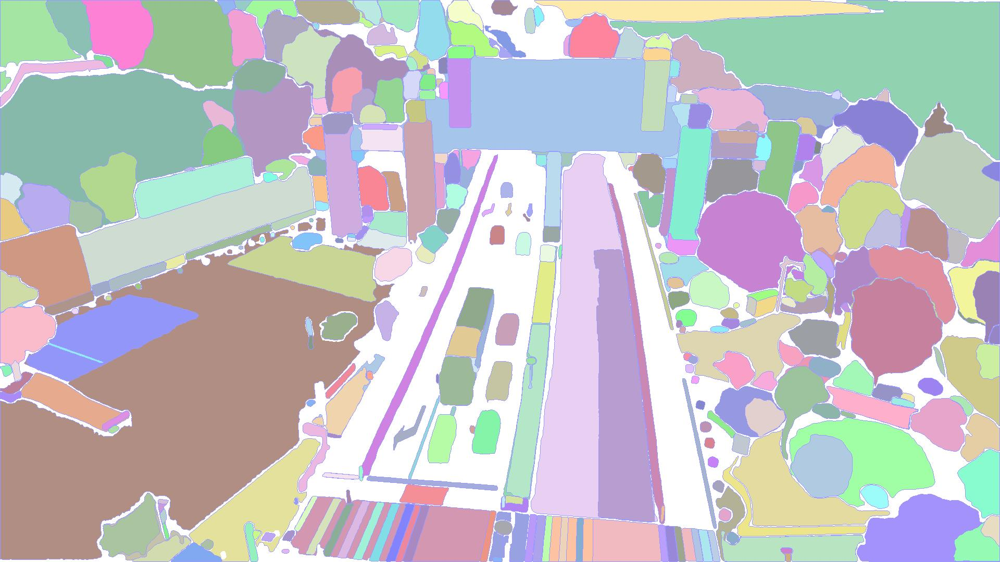
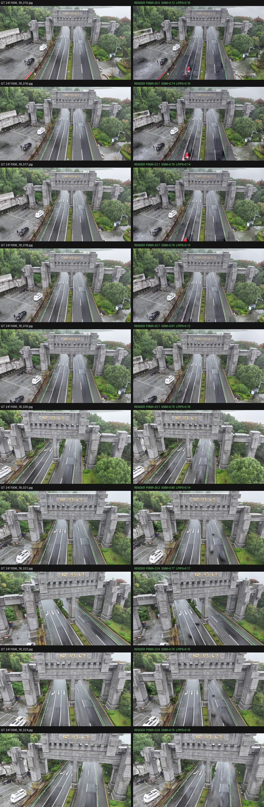
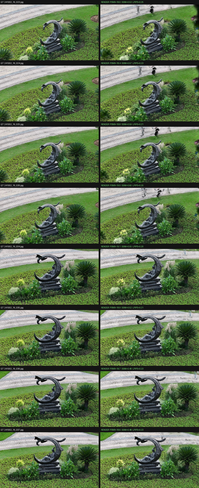
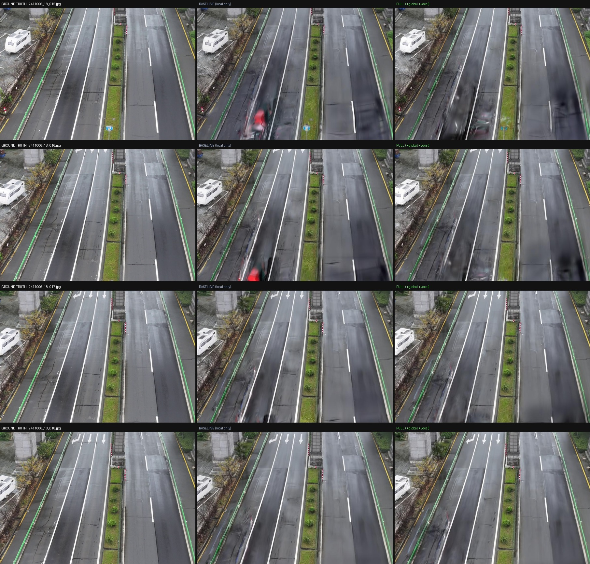

01Ringkasan
DroneSplat menyelesaikan dua masalah inti saat merekonstruksi scene 3D dari foto drone nyata: objek bergerak (mobil, orang) yang merusak asumsi “scene statis”, dan sudut pandang terbatas (sebagian area hanya terlihat dari sedikit foto).
Inti idenya
- Adaptive Local-Global Masking — menyembunyikan piksel objek dinamis dari loss, ambangnya menyesuaikan otomatis.
- Voxel-guided 3DGS — inisialisasi dari multi-view stereo (DUSt3R) + optimasi terbatas grid voxel, menjaga geometri akurat saat view sedikit.
Isi situs ini
- Pipeline penuh pada 2 scene: Simingshan & Sculpture.
- Penjelasan metode paper beserta rumus kunci.
- Viewer 3D interaktif — orbit & 360° — tertanam di bawah.

02Pipeline yang kita jalankan
Empat tahap untuk tiap scene, di RTX 4080 (±7–12 menit training):
Segmentasi 2D
SAM2 menyegmentasi tiap instance → masks.json
Training 3DGS
7.000 iterasi, loss L1+SSIM dengan masking per-instance
Render
Render ulang gambar train & test dari model Gaussian
Evaluasi
Hitung PSNR / SSIM / LPIPS vs ground truth


03Hasil rekonstruksi kita
🏯 Simingshan gerbang & jalan · 24 foto
🗿 Sculpture patung & taman · 42 foto
Ground-truth (kiri) vs hasil render (kanan). Perhatikan mobil & orang yang bergerak ikut hilang di hasil render — efek langsung masking distraktor.


04Viewer interaktif langsung
Jelajahi hasil rekonstruksi di sini. Pilih scene dan mode, lalu tekan play. Model 3D di-stream ke browser (±44–94 MB) — beri waktu sebentar saat load pertama.
Orbit 3D · Simingshan — drag untuk memutar, scroll zoom, drag-kanan geser. (~44 MB)
Tips: mode Orbit 3D adalah model Gaussian-Splat asli dan cara terbaik memeriksa scene. Mode 360° adalah panorama gaya Street View; karena capture drone menghadap satu busur, hanya sebagian bola yang punya data.
05Masalah yang dipecahkan paper
① Scene dinamis (distraktor)
Objek bergerak melanggar asumsi konsistensi multi-view 3DGS/NeRF → artefak & floater.
Metode lama butuh kelas terdefinisi (gagal bedakan mobil parkir vs melaju) atau pakai ambang tetap sepanjang training.
② Sudut pandang terbatas
Sebagian area hanya tertangkap ~3 foto → radiance field overfit ke input, kualitas novel view buruk.
InstantSplat menambah prior MVS tapi tanpa batasan optimasi lanjutan, sehingga prior terbuang.
06Metode ① — Adaptive Local-Global Masking
Mengenali piksel distraktor dinamis lalu menyembunyikannya dari loss — tanpa kelas terdefinisi, dengan ambang yang menyesuaikan tiap scene & tahap training.
Residual per objek → ambang lokal adaptif
SAM2 memberi mask tiap objek; semua piksel satu objek berbagi satu residual rata-rata. Ambang dihitung dari statistik residual frame (mean + variansi), dilonggarkan di awal training:
Complement global masking (video tracking SAM2)
Mobil berhenti di lampu merah bisa lolos mask lokal. Ambang global lebih ketat menandai objek yang pernah ketahuan bergerak; 5 titik prompt dikirim ke video tracking SAM2 untuk menandainya di semua frame.
07Metode ② — Voxel-guided Gaussian Splatting
Geometri akurat saat view terbatas, memanfaatkan prior MVS tanpa membuat 3DGS kebablasan.
Geometric-aware point sampling
Point cloud padat DUSt3R disaring: ruang dibagi N voxel; tiap titik diberi skor confidence × fitur geometri FPFH; hanya top-k per voxel yang menginisialisasi Gaussian.
Optimasi terpandu voxel
Tiap Gaussian terikat voxelnya; bila melewati τ× ukuran voxel gradiennya meluruh, dan split/clone hanya ke voxel kosong. Voxel “sampah” (terlalu sedikit Gaussian, atau opacity rendah) dibuang.
08Hasil kuantitatif paper
Dilatih pada gambar dengan distraktor, dievaluasi pada gambar tanpa distraktor. Sumber: Figure 6 paper.
| Metode | Simingshan (high-dynamic) | Sculpture | ||||
|---|---|---|---|---|---|---|
| PSNR↑ | SSIM↑ | LPIPS↓ | PSNR↑ | SSIM↑ | LPIPS↓ | |
| 3DGS (vanilla) | 17.04 | 0.438 | 0.228 | 17.11 | 0.396 | 0.256 |
| GS-W | 17.44 | 0.416 | 0.424 | 17.09 | 0.414 | 0.270 |
| WildGaussians | 16.96 | 0.388 | 0.379 | 17.15 | 0.371 | 0.383 |
| NeRF On-the-go | 15.58 | 0.318 | 0.471 | 17.04 | 0.228 | 0.606 |
| Ours (penuh) | 17.79 | 0.469 | 0.214 | 19.64 | 0.517 | 0.192 |
Ablasi — tiap komponen membantu (scene dinamis)
| Konfigurasi | Local | Global | Voxel | PSNR↑ | SSIM↑ | LPIPS↓ |
|---|---|---|---|---|---|---|
| (a) baseline | ✗ | ✗ | ✗ | 19.02 | 0.552 | 0.244 |
| (b) + Local | ✓ | ✗ | ✗ | 20.71 | 0.609 | 0.223 |
| (c) + Global | ✓ | ✓ | ✗ | 20.74 | 0.616 | 0.221 |
| (d) penuh | ✓ | ✓ | ✓ | 20.86 | 0.618 | 0.217 |
09Paper ↔ kode yang kita jalankan
| Komponen paper | Di run kita? | Catatan |
|---|---|---|
| SAM2 segmentasi instance | Ya | seg_all_instances.py |
| Masking residual per-instance | Ya (sederhana) | train.py --use_masks, ambang 0.4, mulai iter 500 |
| Adaptive threshold (E+Var) | Sebagian | train.py rilis pakai versi instance-loss disederhanakan |
| Global tracking (video SAM2) | Tidak | tidak diaktifkan |
| DUSt3R MVS priors | Tidak | kita pakai pose & titik COLMAP yang disediakan |
| Voxel-guided optimization | Tidak | jalur opsional via preprocess.py |
Jadi run kita paling mirip kontrol “Ours (COLMAP)” tanpa voxel-guided — bukan metode penuh — dan memakai split apa adanya, sehingga tidak 1:1 dengan protokol evaluasi paper.
10Melampaui repo — mereimplementasi bagian yang hilang
Kami memverifikasi bahwa kode publik GitHub adalah implementasi parsial: hanya Adaptive Local Masking yang ada;
Complement Global Masking dan Voxel-guided optimization — dua dari empat kontribusi paper — tidak ada
(tidak ada voxel/FPFH/video-tracking di repo; densifikasi = 3DGS standar). Inilah penyebab utama
hasil rekonstruksi kita masih menyisakan “ghost”.
Maka kami mereimplementasi dua komponen yang hilang dari rumus paper, masing-masing di balik flag:
① Complement Global Masking
Objek yang residualnya melewati TG dilacak di semua frame dengan SAM2 video predictor (pusat + 4 titik tepi),
menangkap distraktor yang diam sementara. File baru global_masking.py + --use_global_mask.
②b Voxel-guided optimization
Gaussian diikat ke grid voxel; yang menyimpang gradiennya diluruhkan, dan voxel dengan mean opacity rendah dipangkas —
menghapus Gaussian ghost. Ditambahkan ke gaussian_model.py + --use_voxel.

Kesimpulan jujur: pengurangan ghost yang nyata & terlihat — tapi inkremental di Simingshan, karena distraktornya mayoritas mobil bergerak yang sudah ditangani local mask. PSNR praktis tak berubah (23.2 vs 23.4) karena ghost yang dibuang sebagian tumpang-tindih distraktor yang masih ada di GT test. Viewer Orbit 3D di atas kini memuat model Simingshan yang sudah ditingkatkan ini. Untuk benar-benar menyamai paper masih perlu inisialisasi dense DUSt3R (②a) dan protokol evaluasi persis penulis.